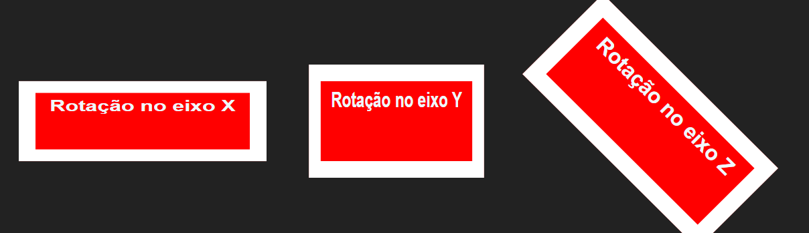

Variável é um conceito muito comum na programação, e que caso você não esteja acostumado, estudará bastante no curso de Javascript. Consiste em armazenar um valor para ser reutilizado uma ou mais vezes a qualquer momento.
Como vínhamos estudando, os estilos são aplicados atribuindo um valor a uma propriedade assim:
color: red;
Onde color é a propriedade e red é o valor aplicado. Mas se red fosse um valor muito complexo que tivéssemos de reutilizá-lo várias vezes, poderíamos armazená-lo. No CSS isso pode ser feito assim:
div { --bacgroundColor: red; }
Neste exemplo, nenhuma propriedade está sendo aplicada ao elemento div, o -- na frente da propriedade faz o valor ser armazenado, para utilizarmos, fazemos assim:
div { background-color: var(--bacgroundColor); }
A função var(), é utilizada para recuperar o valor armazenado numa variável. Entretanto, a variável criada no exemplo anterior só poderá ser aplicada num elemento div, tentar utilizá-la em outro tipo de elemento não produzirá nenhum resultado.
Para armazenar propriedades que possam ser utilizadas em qualquer elemento, basta armazená-la na raiz do documento utilizando a pseudo-classe :root{}, assim:
:root { --bacgroundColor: red; }
Podemos armazenar na raiz quantas variáveis forem precisas:
:root {
--fundoVermelho: red;
--bordaAmarela: yellow 5px solid;
--espacamentoDiv: 10px;
}
E utilizá-las onde e quantas vezes for necessário:
div {
background-color: var(--fundoVermelho);
border: var(--bordaAmarela);
padding: var(--espacamentoDiv);
}
Entretanto, se você não precisa reutilizar um valor não faz sentido utilizar variáveis.
A função calc() é utilizada para retornar um valor com base num cálculo aritmético, por exemplo:
width: calc(100% - 100px);
No exemplo acima, a largura do elemento ocupará o tamanho total da página menos 100 pixels.
width: calc(50% + 100px);
Já neste exemplo, o tamanho do elemento é de metade da página mais 100 pixels.
Os operadores aritméticos podem ser + - * e / e devem estar separados dos valores por um espaço. Valores negativos também são aceitos.
As funções min() e max() recebem uma coleção de valores e decidem qual utilizá-lo com base no cálculo, para tal, devemos utilizar unidades de medida diferentes em cada valor, por exemplo:
width: min(80%, 500px);
No exemplo acima, o valor utilizado sempre será o valor menor, se 80% da janela for menor que 500px, esse será o valor utilizado, caso contrário a largura será sempre 500px. O mesmo critério aplica-se à função max():
width: max(80%, 500px);
Utilizando o mesmo exemplo anterior, agora o valor a ser utilizado será o maior, se o tamanho da página ficar menor que 500px, o valor a ser utilizado será 500px, caso contrário será sempre 80% da página.
Note que esse uso ocorre quando redimensionamos a janela do navegador, diminuindo ou aumentando seu tamanho, ou quando acessamos em dispositivos com resoluções diferentes.
A rotação de um elemento é feita com base num eixo que pode pertencer às coordenadas X, Y ou Z:
Para quem vem do setor do design gráfico pode ser mais fácil compreender os eixos, caso queira buscar um pouco de teoria para facilitar seu entendimento, sugiro que pesquise um pouco sobre plano cartesiano.
Considere o seguinte estilo:
div { transform: rotateX(45deg); }
No exemplo acima, o elemento será exatamente como o estilo define, mas a propriedade tranform o rotacionará 45 graus no sentido horário. Veja as imagens anteriores.
Para rotacionar no sentido anti-horário, basta definir a medida em valores negativos:
transform: rotateX(-45deg);
Sabemos que um círculo completo possui 360º, mas podemos definir valores maiores que 360, o que será feito, é definir a rotação a partir do valor restante da divisão. Por exemplo 365deg rotacionará 5º, 740deg rotacionará 20º. Vejamos as funções de rotação básicas:
transform: rotateX(45deg); transform: rotateY(-90deg); transform: rotateZ(180deg);
A função de escala como o próprio nome diz, é utilizada para aumentar e diminuir elementos, as medidas podem ser definidas em porcentagem ou fator de escala, considere o seguinte estilo:
div { transform: scale(1); }
Neste exemplo, a função scale() não está provocando nenhuma transformação no elemento, pois define o fator de escala como 1, deixando-o no mesmo tamanho em que os valores width e height já definiram. Uma transformação aconteceria caso outro estilo com especificidade maior, aplicado ao elemento, houvesse definido outro fator de escala.
Para fazer com que um elemento possua o dobro do tamanho definido por suas propriedades de altura e largura, devemos fazer assim:
transform: scale(2);
Ou assim para metade do tamanho:
transform: scale(0.5);
Podemos ainda definir a medida em porcentagem:
transform: scale(50%);
Agora o elemento terá a metade do tamanho.
Podemos ainda definir o fator de escala horizontal e vertical individualmente:
transform: scaleX(5); transform: scaleY(2);
O deslocamento é feito com a função translate e é utilizado para mover um objeto em relação à sua posição original, na horizontal (eixo X), ou na vertical (eixo Y). Vejamos alguns exemplos:
div { transform: translateX(500px); }
p { transform: translateY(200px); }
button { transform: translateY(-1200px); }
No primeiro exemplo, o elemento é deslocado para a esquerda 500px, no segundo exemplo é deslocado para baixo 200px, e no terceiro é deslocado para cima 1200px.
Várias propriedades transform juntas num mesmo estilo não surtirão efeito algum, ao final dessa sessão você verá como definir múltiplas funções.
As medidas podem ainda ser definidas em porcentagem, neste caso, basta ter em mente que um deslocamento de 100%, fará o objeto se deslocar a mesma quantidade de pixels referente ao seu próprio tamanho.
transform: translateX(50%); width: 300px;
No exemplo acima, o elemento se deslocará 150px para a esquerda.
Podemos inclinar um elemento no eixo horizontal ou vertical com a função skew(), a unidade de medida é definida em graus. No exemplo abaixo estamos inclinando o elemento 15deg no eixo X (horizontal):
transform: skewX(15deg);
O resultado será este:
Para inclinar no eixo vertical devemos fazer da seguinte maneira:
transform: skewY(10deg);
Podemos também utilizar medidas negativas para inclinar no sentido contrário:
transform: skewX(-15deg);
Caso você precise rotacionar um elemento no plano de visão, isto é, no eixo Z, pode, em vez de utilizar rotateZ(), utilizar apenas rotate():
transform: rotate(45deg);
O exemplo acima rotacionará o elemento no eixo Z em 45 graus no sentido horário.
Caso precise deslocar um elemento no eixo horizontal, em vez de utilizar translateX() pode utilizar apenas translate():
transform: translate(200px);
O exemplo acima deslocará o elemento 200px para a esquerda.
Caso precise inclinar um objeto no eixo X, pode utilizar skew() em vez de skewX():
transform: skew(20deg);
Este exemplo inclinará o objeto em vinte graus na horizontal.
Quando precisarmos utilizar múltiplas funções de transformação, em alguns casos, declarar múltiplas propriedades transform não produzirá o resultado esperado, por exemplo:
div {
transform: scaleY(2);
transform: scaleX(2);
}
No exemplo acima, apenas a segunda função será aplicada. Mas podemos declarar múltiplas funções dentro da mesma propriedade, assim:
div { transform: scaleY(2) scaleX(5); }
Agora ambas estão sendo aplicada ao elemento, ou seja, ele será aumentado duas vezes na vertical e cinco na horizontal. Podemos utilizar ainda funções diferentes:
div { transform: skew(30deg) rotate(45deg); }
No exemplo acima estamos inclinando e rotacionando o elemento ao mesmo tempo. Se não percebeu a diferença aumente o grau de inclinação ou apenas incline sua cabeça para olhar 😉.